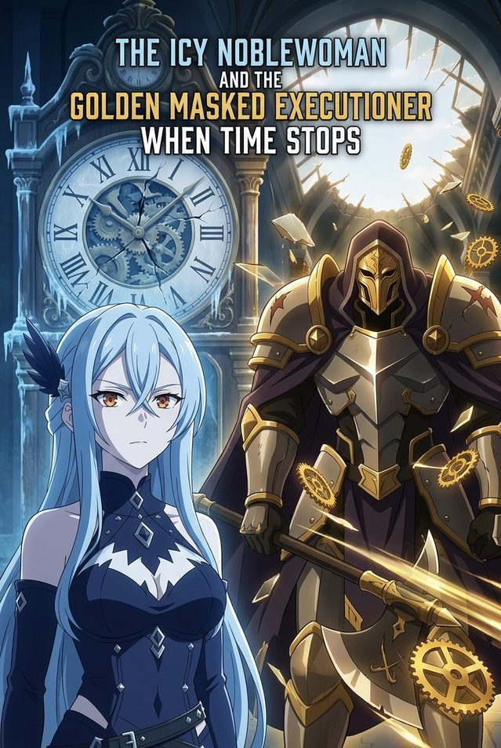
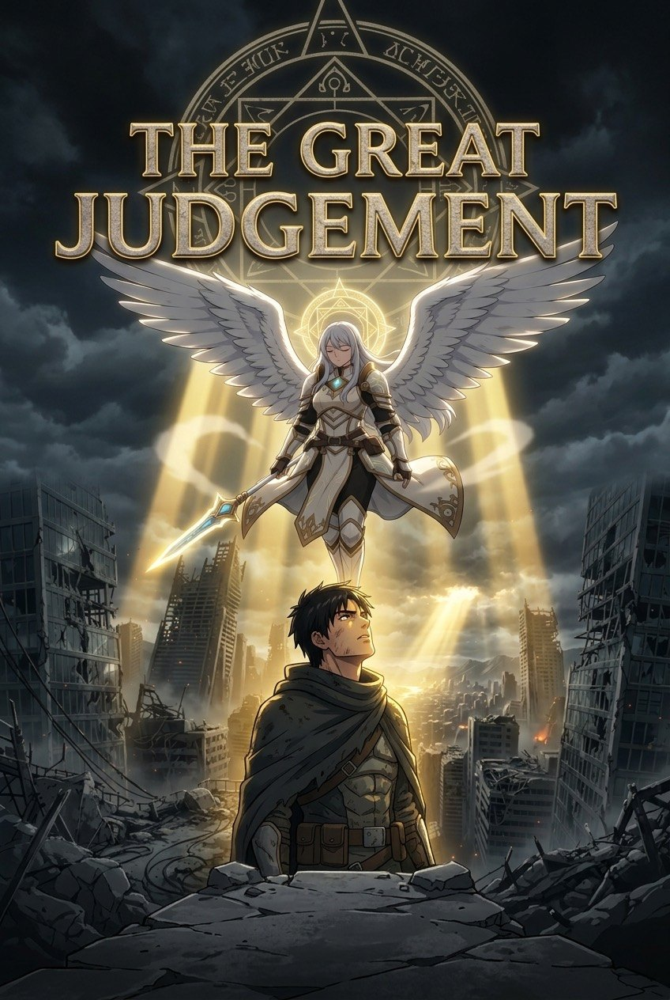

Anime · Made for fun
Not client work, not a product — just me playing. I build AI-generated anime series on Trimz, where each episode is an interactive world viewers help steer. It's the same tools I use professionally, pointed at something purely creative.

When time stops.
Lady Celeste is an icy noblewoman marked by a thirty-day death seal, hunted every afternoon at 3:00 PM. Ren — a broke college student dropped into the body of her bodyguard — is the only one who remembers each loop when she dies. Every reset sends him back to 2:50 PM with ten minutes to change the ending.

Original Series · Now on Trimz
The knowledge was never the sin. The speed was.
Fallen angels and stoic warriors reclaim a ruined world from the superintelligent AI they once built as a god. The fantasy companion to my Enoch & the Stoics essays — the same argument, wearing armor.
IrisNoir Essays · Food for Thought
A very old book about forbidden knowledge, a school of philosophy about what's actually in your control, and the newest technology we have. Read one in three minutes — they're also the spine of a fantasy series I'm building, The Great Judgment.